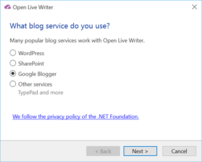
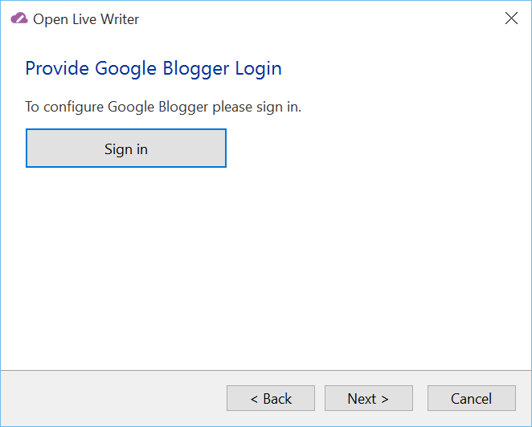
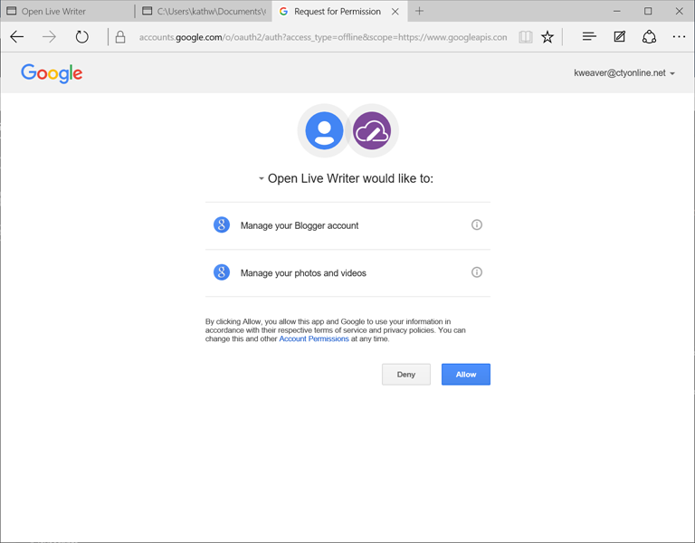

There are several paths to get to the blog setup.
First choose the blog type:
In this case Google Blogger
Click Next
Login to Google Blogger with your usual username and password. A browser window will open to allow this. Accept the following by clicking allow:  That browser window will close.
Open Live Writer will set up your blog, if you have multiple blogs, you will be able to select which one.
You will also be asked for a blog nickname, with a suggestion, before finishing
Click Finish and you are done.